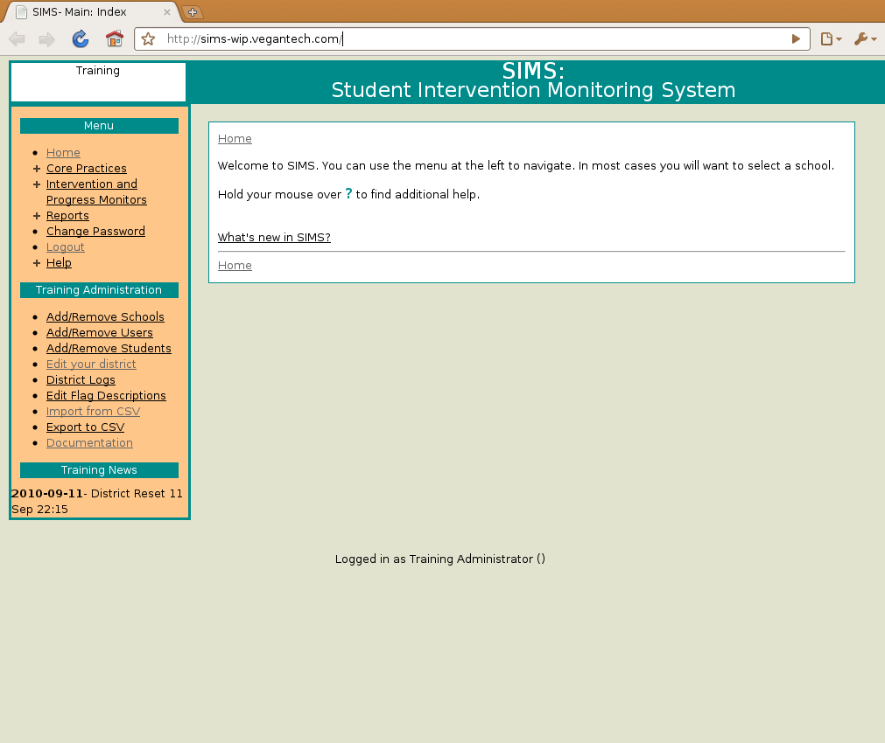
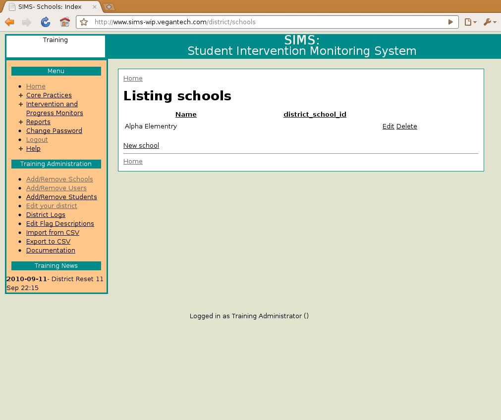
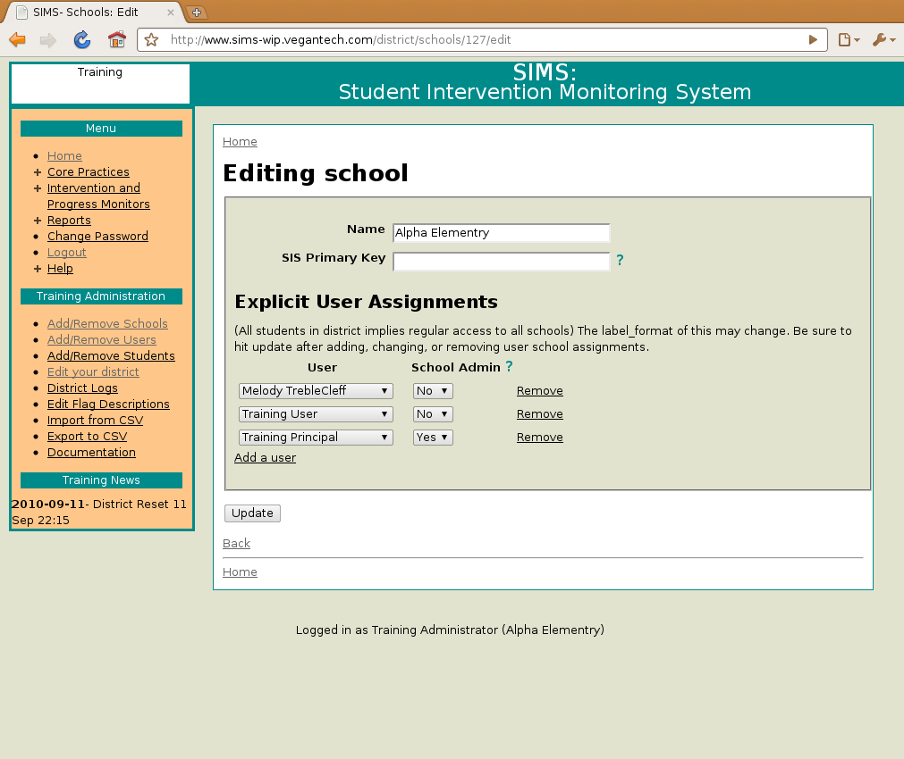
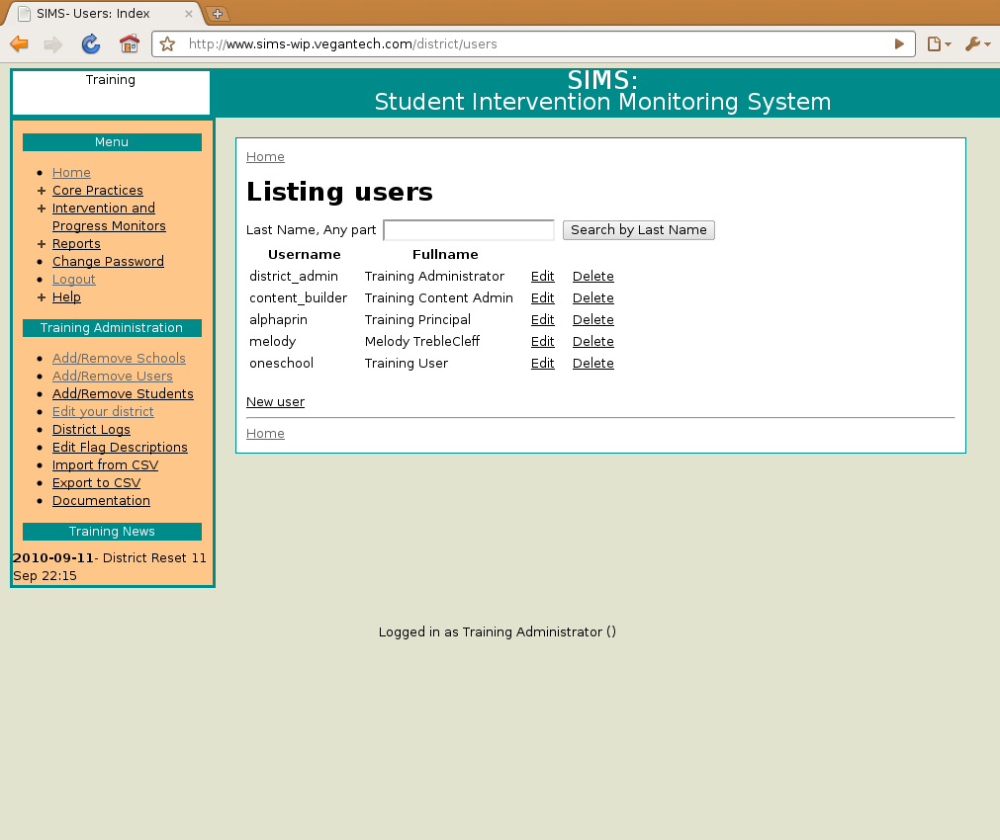
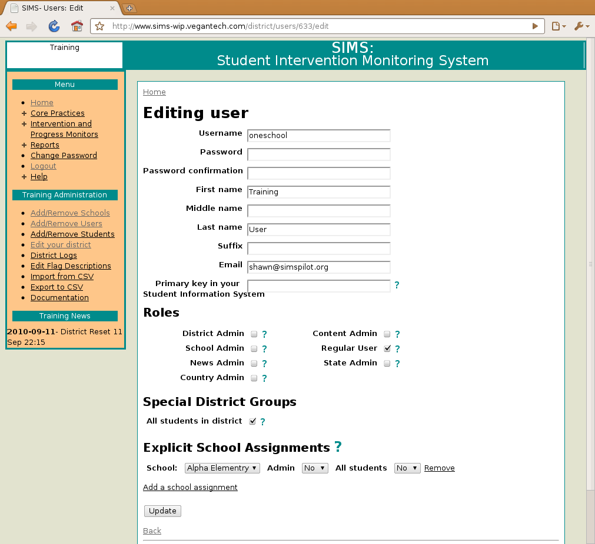
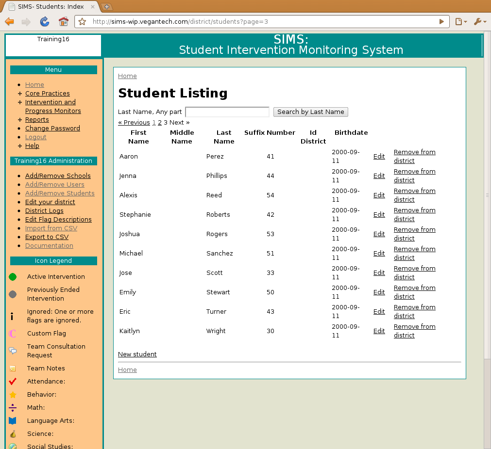

Getting Started
It is easiest to setup users with access to all students in the district. You may wish to start with a small group of users, schools, and students using this level of access control.
After that, you can assign users to all students in a particular school.
After that, you can designate a school admin and have them setup groups and assign users and students to those groups. (See the school admin module for more information.)
-

- DPI instructs the state admin setup your district. State admin will provide District Administrator with a user and password for the district admin and your URL.
- Edit the logo, district hash key (if it will be used), and abbreviation Login with your district_admin user and password, go to edit your district and make the appropriate changes. The following steps can be done manually or using data generated by the district. For unattended automated jobs (such as scheduled batch processes, the district should create a user with username of district_upload.  
- Add schools for your district. To do this manually select Add/Remove Schools from the menu at the left. You may have the schools already entered for you, if not, add each one using the New School link and fill out the forms. If you are going do do any batch uploads, assign the id_districts for each school. (This is usually the primary key in your Student Information System.) For scripted installation populate the schools.csv file.  
- Add users To do this manually select Add/Remove Users from the menu at the left. This is also where you can change passwords. Add each one using the New User link and fill out the forms. If you are going do do any batch uploads, assign the id_districts for each user. (This is usually the primary key in your Student Information System.) You can also assign users to schools, assign roles, and assign special groups (everyone in district, everyone in a school.) School admins are also assigned here. Most features of SIMS require the "regular_user" role. For scripted installation populate the users.csv file.
- Designate school admins See #4 Make sure they have the school_admin role and are selected as an admin in the school assignment.
- Designate content admins Give users the content_admin role. For scripted installation populate content_admins.csv with the primary keys of the users who should have this role. 
- Add students To do this manually select Add/Remove Students from the menu at the left. You can assign enrollments, system flags, and the extended profile here as well. For scripted installation populate the students.csv
- Add enrollments This is done on the add/edit student screen. Add an enrollment and choose the school and grade. For scripted installation populate the enrollments.csv
- Add user school assignments This is similar to #5. For a user to access a school, they need all_students_in_district access, all_schools or an assignment to a school. For scripted installation populate the user_school_assignments.csv, all_schools.csv, all_students_in_district.csv If you wish to designate users that are assigned to a particular school, you can also populate the staff_assignments.csv If this is present, then certain dropdowns (like intervention participants) will be limited to staff assigned to the school instead of everyone that has access to that school (useful in larger districts.)
- Add groups (School Admin) After selecting a school you access this via the Manage Groups link. Groups are basically sections, but could also be neighborhoods or any collections of students. Make sure they get assigned an id_district if you're going to do batch uploads. For scripted installation populate the groups.csv
- Add student group assignments (School Admin) This is done via the user_and_student assignment link for each group. For scripted installation populate the student_groups.csv
- Add user group assignments This is done via the user_and_student assignment link for each group. Principals are designated here. You can designate a principal for the entire school, a specific grade, or a smaller group. For scripted installation populate the user_groups.csv, and all_students_in_school.csv
- Add system flags (and add flag descriptions.) When editing or creating a student you can add flags there. You will need to determine how and why you wish to flag students and then generate a list of students and their reason for being flagged. The flag descriptions menu allows you to enter content that will appear in the legend. For scripted installation populate the system_flags.csv
- Create extended profiles When editing a student you can create an html snippet (basically content within a div tag) and upload it. For scripted installation populate the ext_arbitraries.csv, ext_siblings.csv, ext_summaries.csv, and ext_test_scores.csv


Steps 10-12 are performed by the school administrator. See the school admin documentation for more information. You may be interested in the csv files referenced here.